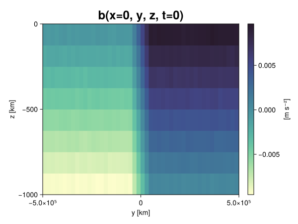
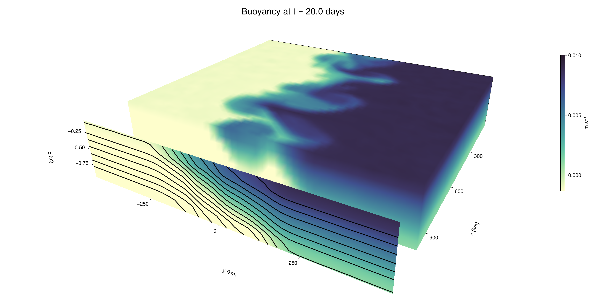

Baroclinic adjustment
In this example, we simulate the evolution and equilibration of a baroclinically unstable front.
Install dependencies
First let's make sure we have all required packages installed.
using Pkg
pkg"add Oceananigans, CairoMakie"using Oceananigans
using Oceananigans.UnitsGrid
We use a three-dimensional channel that is periodic in the x direction:
Lx = 1000kilometers # east-west extent [m]
Ly = 1000kilometers # north-south extent [m]
Lz = 1kilometers # depth [m]
grid = RectilinearGrid(size = (48, 48, 8),
x = (0, Lx),
y = (-Ly/2, Ly/2),
z = (-Lz, 0),
topology = (Periodic, Bounded, Bounded))48×48×8 RectilinearGrid{Float64, Periodic, Bounded, Bounded} on CPU with 3×3×3 halo
├── Periodic x ∈ [0.0, 1.0e6) regularly spaced with Δx=20833.3
├── Bounded y ∈ [-500000.0, 500000.0] regularly spaced with Δy=20833.3
└── Bounded z ∈ [-1000.0, 0.0] regularly spaced with Δz=125.0Model
We built a HydrostaticFreeSurfaceModel with an ImplicitFreeSurface solver. Regarding Coriolis, we use a beta-plane centered at 45° South.
model = HydrostaticFreeSurfaceModel(; grid,
coriolis = BetaPlane(latitude = -45),
buoyancy = BuoyancyTracer(),
tracers = :b,
momentum_advection = WENO(),
tracer_advection = WENO())HydrostaticFreeSurfaceModel{CPU, RectilinearGrid}(time = 0 seconds, iteration = 0)
├── grid: 48×48×8 RectilinearGrid{Float64, Periodic, Bounded, Bounded} on CPU with 3×3×3 halo
├── timestepper: QuasiAdamsBashforth2TimeStepper
├── tracers: b
├── closure: Nothing
├── buoyancy: BuoyancyTracer with ĝ = NegativeZDirection()
├── free surface: ImplicitFreeSurface with gravitational acceleration 9.80665 m s⁻²
│ └── solver: FFTImplicitFreeSurfaceSolver
├── advection scheme:
│ ├── momentum: WENO reconstruction order 5
│ └── b: WENO reconstruction order 5
└── coriolis: BetaPlane{Float64}We start our simulation from rest with a baroclinically unstable buoyancy distribution. We use ramp(y, Δy), defined below, to specify a front with width Δy and horizontal buoyancy gradient M². We impose the front on top of a vertical buoyancy gradient N² and a bit of noise.
"""
ramp(y, Δy)
Linear ramp from 0 to 1 between -Δy/2 and +Δy/2.
For example:
```
y < -Δy/2 => ramp = 0
-Δy/2 < y < -Δy/2 => ramp = y / Δy
y > Δy/2 => ramp = 1
```
"""
ramp(y, Δy) = min(max(0, y/Δy + 1/2), 1)
N² = 1e-5 # [s⁻²] buoyancy frequency / stratification
M² = 1e-7 # [s⁻²] horizontal buoyancy gradient
Δy = 100kilometers # width of the region of the front
Δb = Δy * M² # buoyancy jump associated with the front
ϵb = 1e-2 * Δb # noise amplitude
bᵢ(x, y, z) = N² * z + Δb * ramp(y, Δy) + ϵb * randn()
set!(model, b=bᵢ)Let's visualize the initial buoyancy distribution.
using CairoMakie
# Build coordinates with units of kilometers
x, y, z = 1e-3 .* nodes(grid, (Center(), Center(), Center()))
b = model.tracers.b
fig, ax, hm = heatmap(view(b, 1, :, :),
colormap = :deep,
axis = (xlabel = "y [km]",
ylabel = "z [km]",
title = "b(x=0, y, z, t=0)",
titlesize = 24))
Colorbar(fig[1, 2], hm, label = "[m s⁻²]")
fig
Simulation
Now let's build a Simulation.
simulation = Simulation(model, Δt=20minutes, stop_time=20days)Simulation of HydrostaticFreeSurfaceModel{CPU, RectilinearGrid}(time = 0 seconds, iteration = 0)
├── Next time step: 20 minutes
├── Elapsed wall time: 0 seconds
├── Wall time per iteration: NaN days
├── Stop time: 20 days
├── Stop iteration : Inf
├── Wall time limit: Inf
├── Callbacks: OrderedDict with 4 entries:
│ ├── stop_time_exceeded => Callback of stop_time_exceeded on IterationInterval(1)
│ ├── stop_iteration_exceeded => Callback of stop_iteration_exceeded on IterationInterval(1)
│ ├── wall_time_limit_exceeded => Callback of wall_time_limit_exceeded on IterationInterval(1)
│ └── nan_checker => Callback of NaNChecker for u on IterationInterval(100)
├── Output writers: OrderedDict with no entries
└── Diagnostics: OrderedDict with no entriesWe add a TimeStepWizard callback to adapt the simulation's time-step,
conjure_time_step_wizard!(simulation, IterationInterval(20), cfl=0.2, max_Δt=20minutes)Also, we add a callback to print a message about how the simulation is going,
using Printf
wall_clock = Ref(time_ns())
function print_progress(sim)
u, v, w = model.velocities
progress = 100 * (time(sim) / sim.stop_time)
elapsed = (time_ns() - wall_clock[]) / 1e9
@printf("[%05.2f%%] i: %d, t: %s, wall time: %s, max(u): (%6.3e, %6.3e, %6.3e) m/s, next Δt: %s\n",
progress, iteration(sim), prettytime(sim), prettytime(elapsed),
maximum(abs, u), maximum(abs, v), maximum(abs, w), prettytime(sim.Δt))
wall_clock[] = time_ns()
return nothing
end
add_callback!(simulation, print_progress, IterationInterval(100))Diagnostics/Output
Here, we save the buoyancy, $b$, at the edges of our domain as well as the zonal ($x$) average of buoyancy.
u, v, w = model.velocities
ζ = ∂x(v) - ∂y(u)
B = Average(b, dims=1)
U = Average(u, dims=1)
V = Average(v, dims=1)
filename = "baroclinic_adjustment"
save_fields_interval = 0.5day
slicers = (east = (grid.Nx, :, :),
north = (:, grid.Ny, :),
bottom = (:, :, 1),
top = (:, :, grid.Nz))
for side in keys(slicers)
indices = slicers[side]
simulation.output_writers[side] = JLD2OutputWriter(model, (; b, ζ);
filename = filename * "_$(side)_slice",
schedule = TimeInterval(save_fields_interval),
overwrite_existing = true,
indices)
end
simulation.output_writers[:zonal] = JLD2OutputWriter(model, (; b=B, u=U, v=V);
filename = filename * "_zonal_average",
schedule = TimeInterval(save_fields_interval),
overwrite_existing = true)JLD2OutputWriter scheduled on TimeInterval(12 hours):
├── filepath: ./baroclinic_adjustment_zonal_average.jld2
├── 3 outputs: (b, u, v)
├── array type: Array{Float64}
├── including: [:grid, :coriolis, :buoyancy, :closure]
├── file_splitting: NoFileSplitting
└── file size: 30.7 KiBNow we're ready to run.
@info "Running the simulation..."
run!(simulation)
@info "Simulation completed in " * prettytime(simulation.run_wall_time)[ Info: Running the simulation...
[ Info: Initializing simulation...
[00.00%] i: 0, t: 0 seconds, wall time: 24.539 seconds, max(u): (0.000e+00, 0.000e+00, 0.000e+00) m/s, next Δt: 20 minutes
[ Info: ... simulation initialization complete (25.377 seconds)
[ Info: Executing initial time step...
[ Info: ... initial time step complete (23.381 seconds).
[06.94%] i: 100, t: 1.389 days, wall time: 38.103 seconds, max(u): (1.283e-01, 1.215e-01, 1.561e-03) m/s, next Δt: 20 minutes
[13.89%] i: 200, t: 2.778 days, wall time: 1.160 seconds, max(u): (2.128e-01, 1.808e-01, 1.759e-03) m/s, next Δt: 20 minutes
[20.83%] i: 300, t: 4.167 days, wall time: 1.080 seconds, max(u): (2.793e-01, 2.353e-01, 1.781e-03) m/s, next Δt: 20 minutes
[27.78%] i: 400, t: 5.556 days, wall time: 1.009 seconds, max(u): (3.477e-01, 3.149e-01, 1.844e-03) m/s, next Δt: 20 minutes
[34.72%] i: 500, t: 6.944 days, wall time: 983.362 ms, max(u): (4.484e-01, 4.266e-01, 1.868e-03) m/s, next Δt: 20 minutes
[41.67%] i: 600, t: 8.333 days, wall time: 1.052 seconds, max(u): (5.555e-01, 7.038e-01, 2.652e-03) m/s, next Δt: 20 minutes
[48.61%] i: 700, t: 9.722 days, wall time: 1.095 seconds, max(u): (7.814e-01, 1.125e+00, 2.796e-03) m/s, next Δt: 20 minutes
[55.56%] i: 800, t: 11.111 days, wall time: 1.636 seconds, max(u): (1.135e+00, 1.168e+00, 4.250e-03) m/s, next Δt: 20 minutes
[62.50%] i: 900, t: 12.500 days, wall time: 1.335 seconds, max(u): (1.445e+00, 1.198e+00, 4.509e-03) m/s, next Δt: 20 minutes
[69.44%] i: 1000, t: 13.889 days, wall time: 1.068 seconds, max(u): (1.431e+00, 1.204e+00, 4.321e-03) m/s, next Δt: 20 minutes
[76.39%] i: 1100, t: 15.278 days, wall time: 1.126 seconds, max(u): (1.300e+00, 1.106e+00, 3.290e-03) m/s, next Δt: 20 minutes
[83.33%] i: 1200, t: 16.667 days, wall time: 1.149 seconds, max(u): (1.225e+00, 1.109e+00, 2.539e-03) m/s, next Δt: 20 minutes
[90.28%] i: 1300, t: 18.056 days, wall time: 1.056 seconds, max(u): (1.238e+00, 1.182e+00, 3.133e-03) m/s, next Δt: 20 minutes
[97.22%] i: 1400, t: 19.444 days, wall time: 1.069 seconds, max(u): (1.369e+00, 1.327e+00, 2.585e-03) m/s, next Δt: 20 minutes
[ Info: Simulation is stopping after running for 1.138 minutes.
[ Info: Simulation time 20 days equals or exceeds stop time 20 days.
[ Info: Simulation completed in 1.139 minutes
Visualization
All that's left is to make a pretty movie. Actually, we make two visualizations here. First, we illustrate how to make a 3D visualization with Makie's Axis3 and Makie.surface. Then we make a movie in 2D. We use CairoMakie in this example, but note that using GLMakie is more convenient on a system with OpenGL, as figures will be displayed on the screen.
using CairoMakieThree-dimensional visualization
We load the saved buoyancy output on the top, north, and east surface as FieldTimeSerieses.
filename = "baroclinic_adjustment"
sides = keys(slicers)
slice_filenames = NamedTuple(side => filename * "_$(side)_slice.jld2" for side in sides)
b_timeserieses = (east = FieldTimeSeries(slice_filenames.east, "b"),
north = FieldTimeSeries(slice_filenames.north, "b"),
top = FieldTimeSeries(slice_filenames.top, "b"))
B_timeseries = FieldTimeSeries(filename * "_zonal_average.jld2", "b")
times = B_timeseries.times
grid = B_timeseries.grid48×48×8 RectilinearGrid{Float64, Periodic, Bounded, Bounded} on CPU with 3×3×3 halo
├── Periodic x ∈ [0.0, 1.0e6) regularly spaced with Δx=20833.3
├── Bounded y ∈ [-500000.0, 500000.0] regularly spaced with Δy=20833.3
└── Bounded z ∈ [-1000.0, 0.0] regularly spaced with Δz=125.0We build the coordinates. We rescale horizontal coordinates to kilometers.
xb, yb, zb = nodes(b_timeserieses.east)
xb = xb ./ 1e3 # convert m -> km
yb = yb ./ 1e3 # convert m -> km
Nx, Ny, Nz = size(grid)
x_xz = repeat(x, 1, Nz)
y_xz_north = y[end] * ones(Nx, Nz)
z_xz = repeat(reshape(z, 1, Nz), Nx, 1)
x_yz_east = x[end] * ones(Ny, Nz)
y_yz = repeat(y, 1, Nz)
z_yz = repeat(reshape(z, 1, Nz), grid.Ny, 1)
x_xy = x
y_xy = y
z_xy_top = z[end] * ones(grid.Nx, grid.Ny)Then we create a 3D axis. We use zonal_slice_displacement to control where the plot of the instantaneous zonal average flow is located.
fig = Figure(size = (1600, 800))
zonal_slice_displacement = 1.2
ax = Axis3(fig[2, 1],
aspect=(1, 1, 1/5),
xlabel = "x (km)",
ylabel = "y (km)",
zlabel = "z (m)",
xlabeloffset = 100,
ylabeloffset = 100,
zlabeloffset = 100,
limits = ((x[1], zonal_slice_displacement * x[end]), (y[1], y[end]), (z[1], z[end])),
elevation = 0.45,
azimuth = 6.8,
xspinesvisible = false,
zgridvisible = false,
protrusions = 40,
perspectiveness = 0.7)Axis3()We use data from the final savepoint for the 3D plot. Note that this plot can easily be animated by using Makie's Observable. To dive into Observables, check out Makie.jl's Documentation.
n = length(times)41Now let's make a 3D plot of the buoyancy and in front of it we'll use the zonally-averaged output to plot the instantaneous zonal-average of the buoyancy.
b_slices = (east = interior(b_timeserieses.east[n], 1, :, :),
north = interior(b_timeserieses.north[n], :, 1, :),
top = interior(b_timeserieses.top[n], :, :, 1))
# Zonally-averaged buoyancy
B = interior(B_timeseries[n], 1, :, :)
clims = 1.1 .* extrema(b_timeserieses.top[n][:])
kwargs = (colorrange=clims, colormap=:deep, shading=NoShading)
surface!(ax, x_yz_east, y_yz, z_yz; color = b_slices.east, kwargs...)
surface!(ax, x_xz, y_xz_north, z_xz; color = b_slices.north, kwargs...)
surface!(ax, x_xy, y_xy, z_xy_top; color = b_slices.top, kwargs...)
sf = surface!(ax, zonal_slice_displacement .* x_yz_east, y_yz, z_yz; color = B, kwargs...)
contour!(ax, y, z, B; transformation = (:yz, zonal_slice_displacement * x[end]),
levels = 15, linewidth = 2, color = :black)
Colorbar(fig[2, 2], sf, label = "m s⁻²", height = Relative(0.4), tellheight=false)
title = "Buoyancy at t = " * string(round(times[n] / day, digits=1)) * " days"
fig[1, 1:2] = Label(fig, title; fontsize = 24, tellwidth = false, padding = (0, 0, -120, 0))
rowgap!(fig.layout, 1, Relative(-0.2))
colgap!(fig.layout, 1, Relative(-0.1))
save("baroclinic_adjustment_3d.png", fig)
Two-dimensional movie
We make a 2D movie that shows buoyancy $b$ and vertical vorticity $ζ$ at the surface, as well as the zonally-averaged zonal and meridional velocities $U$ and $V$ in the $(y, z)$ plane. First we load the FieldTimeSeries and extract the additional coordinates we'll need for plotting
ζ_timeseries = FieldTimeSeries(slice_filenames.top, "ζ")
U_timeseries = FieldTimeSeries(filename * "_zonal_average.jld2", "u")
B_timeseries = FieldTimeSeries(filename * "_zonal_average.jld2", "b")
V_timeseries = FieldTimeSeries(filename * "_zonal_average.jld2", "v")
xζ, yζ, zζ = nodes(ζ_timeseries)
yv = ynodes(V_timeseries)
xζ = xζ ./ 1e3 # convert m -> km
yζ = yζ ./ 1e3 # convert m -> km
yv = yv ./ 1e3 # convert m -> km49-element Vector{Float64}:
-500.0
-479.1666666666667
-458.3333333333333
-437.5
-416.6666666666667
-395.8333333333333
-375.0
-354.1666666666667
-333.3333333333333
-312.5
-291.6666666666667
-270.8333333333333
-250.0
-229.16666666666666
-208.33333333333334
-187.5
-166.66666666666666
-145.83333333333334
-125.0
-104.16666666666667
-83.33333333333333
-62.5
-41.666666666666664
-20.833333333333332
0.0
20.833333333333332
41.666666666666664
62.5
83.33333333333333
104.16666666666667
125.0
145.83333333333334
166.66666666666666
187.5
208.33333333333334
229.16666666666666
250.0
270.8333333333333
291.6666666666667
312.5
333.3333333333333
354.1666666666667
375.0
395.8333333333333
416.6666666666667
437.5
458.3333333333333
479.1666666666667
500.0Next, we set up a plot with 4 panels. The top panels are large and square, while the bottom panels get a reduced aspect ratio through rowsize!.
set_theme!(Theme(fontsize=24))
fig = Figure(size=(1800, 1000))
axb = Axis(fig[1, 2], xlabel="x (km)", ylabel="y (km)", aspect=1)
axζ = Axis(fig[1, 3], xlabel="x (km)", ylabel="y (km)", aspect=1, yaxisposition=:right)
axu = Axis(fig[2, 2], xlabel="y (km)", ylabel="z (m)")
axv = Axis(fig[2, 3], xlabel="y (km)", ylabel="z (m)", yaxisposition=:right)
rowsize!(fig.layout, 2, Relative(0.3))To prepare a plot for animation, we index the timeseries with an Observable,
n = Observable(1)
b_top = @lift interior(b_timeserieses.top[$n], :, :, 1)
ζ_top = @lift interior(ζ_timeseries[$n], :, :, 1)
U = @lift interior(U_timeseries[$n], 1, :, :)
V = @lift interior(V_timeseries[$n], 1, :, :)
B = @lift interior(B_timeseries[$n], 1, :, :)Observable([-0.009400839453134377 -0.008151608870939886 -0.006877654134516124 -0.005639119973587528 -0.004358490299660136 -0.0031134277069704134 -0.0018837661315765223 -0.0006218422691887246; -0.009362928878409206 -0.00813709192641143 -0.006866693634180135 -0.005637035680117661 -0.00434599549007356 -0.0031496124978322676 -0.0018725620423846907 -0.0006302389948871045; -0.009366072183933238 -0.008154637468374462 -0.006890614483483326 -0.005630945557510178 -0.004391721098809798 -0.003139343872289049 -0.0018907041773544152 -0.0006430081398028884; -0.009390829217744165 -0.00811136596193379 -0.006857972346732635 -0.005633644923835508 -0.004373810150633484 -0.0031425290994544987 -0.001865445326028669 -0.0006336949271514258; -0.00936808972727237 -0.008168322471192238 -0.006859001095781005 -0.005617481627946752 -0.0043611854253587535 -0.003130489439245892 -0.0018854058769039945 -0.0006170831974885023; -0.009402357920998344 -0.00811252805435047 -0.0068813854461951445 -0.005623969774081556 -0.004358036875743123 -0.003150103011112869 -0.0019126665012026405 -0.0006190702561266246; -0.009365554382579386 -0.008143120682606794 -0.006858905801761905 -0.005607937556777576 -0.004376763656651869 -0.0031077195491337633 -0.0018855466629363524 -0.000642114347457655; -0.009378290897508341 -0.008127771596787832 -0.006888422761564486 -0.005612795094265265 -0.004374449278814548 -0.00314196406837909 -0.00188136410561571 -0.000629178492962302; -0.009400726125945086 -0.008146809666193975 -0.006867019573759209 -0.005607175602586816 -0.004362881680172772 -0.0031605367912073226 -0.0018966210907812352 -0.0005934747689859434; -0.009414589286725117 -0.008131479611029316 -0.006848832503261165 -0.0056009361248360034 -0.004387323964806413 -0.003129541113469717 -0.0018732486389566004 -0.0006250121341391584; -0.009375175476607276 -0.008125628416102296 -0.006883482522632084 -0.005619371012051159 -0.0043585525212007994 -0.0031334379786500197 -0.0018947722800057465 -0.0006161423736601706; -0.00936364334205247 -0.008136388702967285 -0.0068496430257422814 -0.005613970062415208 -0.00439607361280048 -0.0031290689627749024 -0.0019003272566207746 -0.000605660854402991; -0.009379061346978195 -0.008145205445739927 -0.006843830362491828 -0.005617567727652549 -0.004381352125625648 -0.003146768156292072 -0.0018729191881054162 -0.0006021465879016113; -0.009362489746993283 -0.00811456265327464 -0.006870703191408597 -0.00560836054358834 -0.004364514002680561 -0.0031412564332369505 -0.001853983232754943 -0.000630450670925699; -0.009386280572577831 -0.008137299303267028 -0.006870041423341592 -0.005648039450642145 -0.004369414398089155 -0.003143023558374954 -0.0018817515881434802 -0.0006439413530128023; -0.009364049500624569 -0.008107768530164925 -0.006852604537864165 -0.005591155634211735 -0.0043954194411770856 -0.003103910355947153 -0.001868952521196304 -0.0006399173850506279; -0.009387310402819213 -0.008134591970658576 -0.0068869118533532 -0.005630450208973042 -0.0043677634092169045 -0.00311638926961959 -0.001885216204185741 -0.0006397313542549653; -0.009373169593471975 -0.008135218552911236 -0.006869032478180002 -0.005618999134205758 -0.004375289399420665 -0.003119384190307836 -0.0018914429622758563 -0.0006404286891622961; -0.009371898246405531 -0.008119535648204168 -0.0068578226870035725 -0.005616693881509742 -0.004387419605327843 -0.0031271863618593503 -0.0018696222728802794 -0.0006169578187873449; -0.009349061155324636 -0.008121907079931464 -0.006858875943399581 -0.005601919599841901 -0.00437429607645795 -0.003122064059897588 -0.0019114070443752174 -0.0006180003964757628; -0.009369412917041284 -0.008120163843245475 -0.006874510532261705 -0.005640021548087533 -0.0043707822034609765 -0.00313114557776605 -0.0019085245065394226 -0.0006318323400878211; -0.009375868854822722 -0.008128742885151847 -0.006869660585096139 -0.0056135519675793236 -0.0043740110154107765 -0.0031018840870113574 -0.001918550894568851 -0.0006301236522092038; -0.007469588880001179 -0.006239416527210877 -0.004990057612260258 -0.0037620783951391383 -0.0024973648383290825 -0.0012471656347987977 2.5162995980858366e-6 0.0012281904669689063; -0.005440670738401043 -0.004167462143089078 -0.0029042314880700637 -0.0016608664703542913 -0.0004008451227236051 0.000846121239084007 0.0020971608353414564 0.0033448074666191283; -0.003373376549440123 -0.0020860129551552717 -0.0008246507448872485 0.00041323300159167974 0.001644453308175541 0.0029157268011735502 0.00415393637085442 0.0054421613298850395; -0.0012500582122335297 -1.7295983193592503e-6 0.0012530578534254329 0.0025065195780348327 0.00375667531732091 0.0050046755137718455 0.006243142560349355 0.007496562217270102; 0.0006243406252729087 0.0018764604292359256 0.0031095111923813913 0.004378793070660522 0.005614982670275308 0.006877474855786967 0.008116565796681996 0.009356675488090804; 0.0006174562083752199 0.0018615899598977798 0.0031041515071912468 0.00437908769884722 0.005630297110110839 0.00688301284029452 0.008127967038313892 0.009382533492264757; 0.0005940415752894351 0.001870933542415862 0.0031054582120252326 0.004375539312048004 0.005601932116271638 0.006870653624540847 0.008132068533734653 0.009389624080470881; 0.0006176324352690712 0.0018910504807517273 0.0031251654414007103 0.004369016994677126 0.005632576274806238 0.006887452045570169 0.008128241668231524 0.009383644028196952; 0.0006177633267194789 0.0018635478462025266 0.0031380338981717225 0.004386340253651234 0.005643452440281103 0.006856937989088638 0.008134003482949315 0.009384620805495403; 0.0006319065208530525 0.0018804572107669528 0.0031290172600992364 0.004373272167132785 0.005611444295527022 0.006877706509481885 0.008113936529679969 0.009372287328704092; 0.00063214249457973 0.0018863631025290723 0.0031151596587760334 0.004374411186137541 0.005604560661636821 0.006870193928901837 0.008111605009373914 0.009374338123123509; 0.0006299825070001026 0.0018873622007802564 0.003131971765283992 0.004386308772490224 0.005630123878757195 0.00688591898482442 0.00814171272804138 0.009377189048976572; 0.0006137520248993464 0.0019028797663565974 0.0031291435026399215 0.0043886122577910976 0.005619518055225553 0.006879028362174554 0.008119791091322187 0.009364873635786577; 0.0006067117419237697 0.001888052392080063 0.00313856504574875 0.004371854085370165 0.005658562026619203 0.006865899440043378 0.008122335070831191 0.009390547192834397; 0.000612051446525858 0.0018496929810745196 0.003123818780018202 0.004362033968584741 0.0056042411430480485 0.006867536762113748 0.008124654529830676 0.009381163775231788; 0.0006380824206035402 0.0018881646634934912 0.0031131094483133966 0.004373755640900561 0.0056031285349241134 0.006855198025607255 0.008135163751192713 0.009370410960616542; 0.0006431487694066545 0.0018649070142736524 0.003132475542380997 0.0043560425781029284 0.0056298296004182275 0.006876581206312426 0.00812065954939113 0.009392322103649861; 0.0006175805275587588 0.0018578581187561267 0.003161797271854297 0.0043842661477172876 0.0056167371118072225 0.006907209062550501 0.00812665594203441 0.009357864735842464; 0.0006250553455941099 0.001869908625813312 0.0031222741048424056 0.004402315351158531 0.005624801445597886 0.006863889777466575 0.008123177322431127 0.009359488364349222; 0.0006367029404508777 0.0018700087585178202 0.003114398965640979 0.004390418509441953 0.0056395817955432435 0.006899284442919366 0.008146389429186099 0.009365973472649315; 0.000594389677632236 0.0018771733813017037 0.003117793945979608 0.004364863739379343 0.005630696524039035 0.006911571901379557 0.008135132654154933 0.009392895860128064; 0.0006169070042496145 0.0018725541519001687 0.0031347709014709663 0.004367327860225174 0.005604814136612619 0.006855418718771254 0.008139383387046069 0.00936743064902393; 0.0006543278263456935 0.0018666817904391855 0.0031313027057586224 0.004380759709819625 0.005630838443624473 0.006891599574360416 0.008125024479559546 0.009400315713001879; 0.0006214163436670467 0.0018607586483457958 0.0031259631620044782 0.0043780764599856735 0.005615401455453248 0.006888177807604711 0.008144672014026395 0.009351788059152035; 0.000623659147023469 0.0018730226712010238 0.0031080463563907036 0.004378570523744025 0.0056223804996046465 0.006879938457650372 0.008105319126168289 0.009367560292460402; 0.0006220245352804027 0.0018595783360502143 0.003095391623230096 0.0043644650691885755 0.005626373539998355 0.00689105802405126 0.008136642266121005 0.009365491319943535])
and then build our plot:
hm = heatmap!(axb, xb, yb, b_top, colorrange=(0, Δb), colormap=:thermal)
Colorbar(fig[1, 1], hm, flipaxis=false, label="Surface b(x, y) (m s⁻²)")
hm = heatmap!(axζ, xζ, yζ, ζ_top, colorrange=(-5e-5, 5e-5), colormap=:balance)
Colorbar(fig[1, 4], hm, label="Surface ζ(x, y) (s⁻¹)")
hm = heatmap!(axu, yb, zb, U; colorrange=(-5e-1, 5e-1), colormap=:balance)
Colorbar(fig[2, 1], hm, flipaxis=false, label="Zonally-averaged U(y, z) (m s⁻¹)")
contour!(axu, yb, zb, B; levels=15, color=:black)
hm = heatmap!(axv, yv, zb, V; colorrange=(-1e-1, 1e-1), colormap=:balance)
Colorbar(fig[2, 4], hm, label="Zonally-averaged V(y, z) (m s⁻¹)")
contour!(axv, yb, zb, B; levels=15, color=:black)Finally, we're ready to record the movie.
frames = 1:length(times)
record(fig, filename * ".mp4", frames, framerate=8) do i
n[] = i
endThis page was generated using Literate.jl.